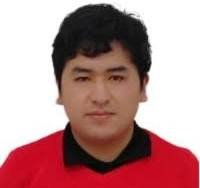
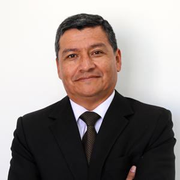
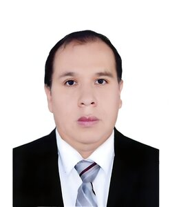
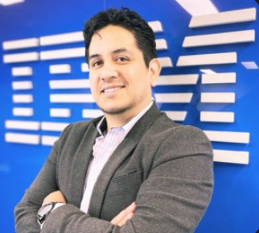

Presentación
El III Congreso Internacional de Tecnologías de Software y Sistemas (COINTSSI 2026) es un evento académico y científico organizado por la Escuela Profesional de Ingeniería de Software y Sistemas de la Universidad Nacional de Juliaca, en el marco de la Semana de la Ingeniería de Software y Sistemas 2026.
El congreso constituye un espacio internacional de intercambio de conocimientos, experiencias y avances científicos en áreas relacionadas con la Ingeniería de Software, Ciencias de la Computación, Sistemas de Información y Tecnologías Emergentes.
3
Días académicos
10
Ponencias magistrales
7
Talleres especializados
1
Concurso de programación
Objetivo del Congreso
Promover el intercambio de conocimientos científicos, tecnológicos y profesionales mediante la participación de especialistas nacionales e internacionales, contribuyendo al fortalecimiento de la investigación, la innovación y la formación académica en el ámbito de la Ingeniería de Software y Sistemas.
Ejes Temáticos
Inteligencia Artificial
Modelos inteligentes, aprendizaje profundo y aplicaciones actuales.
Machine Learning
Aprendizaje automático aplicado a problemas reales.
Ciencia de Datos
Analítica avanzada, visualización y toma de decisiones basada en datos.
Ingeniería de Software
Procesos, metodologías, calidad y desarrollo de software.
Ciberseguridad
Seguridad informática, protección de datos y gestión de riesgos.
Computación en la Nube
Servicios cloud, arquitecturas escalables y transformación digital.
IoT
Internet de las Cosas y sistemas inteligentes conectados.
DevOps y MLOps
Automatización, despliegue continuo y operación de modelos.
Dirigido a
- Estudiantes de pregrado y posgrado.
- Docentes universitarios.
- Investigadores nacionales e internacionales.
- Profesionales del sector tecnológico.
- Comunidad académica interesada en innovación tecnológica.
Relevancia Académica
COINTSSI 2026 representa una de las principales iniciativas académicas y científicas de la región sur del Perú para la promoción de la investigación, la innovación y el desarrollo tecnológico, fortaleciendo la cooperación entre academia, industria y sociedad.
Cronograma General
Martes 30 de junio: Auditorio Magno, Campus Académico la Capilla.
Miércoles 01 de julio: Auditorio Académico (5to piso), Campus Académico la Capilla.
Jueves 02 de julio: Auditorio de Bienestar Universitario, Campus Académico la Capilla.
Ponencias
Ivar Vargas Belizario
Tema
Graphs from Features: Tree-Based Graph Layout for Feature Analysis
Short Bio
Ivar Vargas Belizario es Doctor (PhD) y Magíster (MSc) en Ciencia de la Computación por la Universidad de São Paulo (Brasil), con tres estancias posdoctorales en Ciencia de la Computación. Es profesor e investigador en las áreas de visión por computadora, procesamiento de imágenes, imágenes médicas, aprendizaje automático, aprendizaje profundo, redes complejas y ciencia de datos. Ha publicado en revistas y conferencias científicas internacionales de alto impacto, desarrollando soluciones innovadoras basadas en inteligencia artificial para diversos dominios de aplicación.
ivar@alumni.usp.br
ORCID: https://orcid.org/0000-0001-5970-2283
Página web: http://lattes.cnpq.br/7221568202094697

Milwart Calizaya Bobadila
Tema
Inteligencia Artificial Aplicada a la Industria: Casos Reales
Short Bio
Ingeniero de Sistemas por la Universidad Nacional del Altiplano, con maestría en Informática por la Universidad Nacional de San Agustín. A lo largo de su trayectoria académica, se ha desempeñado como expositor en congresos nacionales e internacionales, abordando temas de vanguardia como videoanalítica, inteligencia artificial, seguridad informática y computación en la nube. Actualmente, se desempeña como Ingeniero de Inteligencia Artificial en SumatoID (Argentina), donde explica su experiencia desarrollando proyectos en distintas industrias.
mcalizaya@sumatoid.com
ORCID:
Página web:

Liz Maribel Huancapaza Hilasaca
Tema
Inteligencia Artificial Aplicada al Análisis de Paisajes Sonoros (Soundscape)
Short Bio
Actualmente es candidata a doctora en Ciencia de la Computación en el Programa de Posgrado en Matemática Aplicada y Ciencia de la Computación del Instituto de Ciencias Matemáticas y de Computación de la Universidad de São Paulo (ICMC-USP), programa con calificación CAPES 7. Obtuvo el grado de magíster en Ciencia de la Computación (2020) en la misma institución. Asimismo, se desempeña como revisora activa de artículos científicos en revistas y conferencias internacionales de reconocido prestigio, incluyendo publicaciones indexadas por organizaciones como IEEE y Elsevier. Sus líneas de investigación se centran en inteligencia artificial, visualización, clasificación y predicción de datos multidimensionales, minería y procesamiento de sonidos e imágenes, con aplicaciones en ecología, medio ambiente y paisaje acústico.
lizhh@usp.br
ORCID: https://orcid.org/0000-0002-0345-2075
Página web: http://lattes.cnpq.br/8396643250450869
José Luis Pineda Tapia
Tema
IoT-Based Low-Cost Sensor Network for Air Quality Monitoring and Climate-Informed Environmental Management: A Case Study from the Brick Manufacturing Area of Juliaca, Peruvian Andes
Short Bio
El Dr. José Luis Pineda Tapia es un destacado docente principal, investigador RENACYT y líder del Grupo de Investigación en Ciencias Aplicadas (GICA) de la Universidad Nacional de Juliaca.Su labor científica prioriza la química ambiental, remediación ecológica y gestión de recursos. Es Ingeniero Químico con doctorado en Ciencias y Tecnologías Medio Ambientales, y maestrías en Química Ambiental y Dirección de Empresas.En gestión universitaria, se ha desempeñado como decano, director de posgrado y director general de laboratorios, equilibrando la rigurosidad técnica ambiental con el desarrollo educativo en el sur del Perú.
jpineda@unaj.edu.pe
ORCID: https://orcid.org/0000-0001-9498-1169
Página web:
Diego Carvalho do Nascimento
Tema
Causality Between Retail Demand and Consumers' Behavior: An Overview of Complex Time Series and its visualization in a Real Case Study.
Short Bio
Diego Carvalho do Nascimento es Profesor e Investigador en NEOMA Business School (Francia) y posee un PhD en Estadística. Su investigación se centra en aprendizaje estadístico y automático, modelado de datos, análisis espacio-temporal y visualización de datos. Ha publicado en revistas científicas de alto impacto, como Royal Statistical Society (Applied Statistics) y Pattern Recognition, y participa activamente en proyectos de investigación aplicada en colaboración con la industria.
diego.nascimento@neoma-bs.fr
ORCID: https://orcid.org/0000-0002-3406-4518
Página web: https://neoma-bs.com/professors/nascimento-diego

Guillermo Calderón Ruiz
Tema
Process mining: oportunidades en industria y academia
Short Bio
Es docente de la Universidad Católica de Santa María (Arequipa, Perú) desde 1998. Es Doctor en Ciencias de la Ingeniería, Área Ciencia de la Computación, y Magíster en Ingeniería por la Pontificia Universidad Católica de Chile. Asimismo, obtuvo el grado de Magíster en Ingeniería de Sistemas y los títulos de Bachiller e Ingeniero de Sistemas en la Universidad Católica de Santa María. Su experiencia académica se centra en las áreas de Gestión de Procesos de Negocio (BPM), Minería de Procesos, Inteligencia de Negocios, Bases de Datos, Minería de Datos y Tecnologías de la Información. Sus actividades de docencia e investigación están orientadas al análisis y mejora de procesos organizacionales mediante el uso de técnicas avanzadas de gestión y análisis de datos.
gcalderon@ucsm.edu.pe
ORCID:
Página web: https://ctivitae.concytec.gob.pe/appDirectorioCTI/VerDatosInvestigador.do?id_investigador=10998

Jean Roger Farfan Gavancho
Tema
WaykiBot, un robot open source
Short Bio
Ingeniero en Sistemas Computacionales por la Universidad Autónoma de Guadalajara – Mexico, con Doctorado en Ingeniería de Sistemas y Abogado. Con certificación internacional en Java Programmer y Java Developer por Sun Microsystem. Desarrollando proyectos basados en Impresión 3D, robot open Source, soluciones basados en IA para diferentes aplicaciones dentro de entorno de robot Humanoide y actualmente investigando y desarrollando el proyecto WaykiBot.
jfarfan@unaj.edu.pe
ORCID: https://orcid.org/0000-0001-9224-6419
Página web:
Irma de Jesus Miguel Garzon
Tema
La Inteligencia Artificial, una aliada en tu aprendizaje
Short Bio
Coordinadora de la Academia de Computación Avanzada de la Ingeniería en Tecnología de Software, del Centro de Enseñanza Técnica Industrial. Datos académicos Licenciatura en Ciencias de la Computación Lugar de estudios: Escuela de Ciencias Físico Matemáticas de la Universidad Autónoma de Puebla Maestría en Ingeniería eléctrica con especialidad en computación. Lugar de estudios: Centro de Investigación y de Estudios Avanzados del IPN Doctorado en ciencias en física educativa Lugar de estudios: Centro de Investigación en Ciencia Aplicada y Tecnología Avanzada del Instituto Politécnico Nacional Experiencia Docente Ha impartido cursos de nivel Bachillerato, Ingeniería y Maestría en la UNAM, el IPN, la Universidad ITESO (la Universidad Jesuita de Guadalajara), la Universidad Politécnica de Puebla, entre otras instituciones educativas.
ingeniería.its@ceti.mx
ORCID:
Página web: https://www.linkedin.com/in/irma-de-jes%C3%BAs-miguel-garz%C3%B3n-51ba8776/
Merling Josué Ramírez Yugra
Tema
La Inteligencia Artificial en el desarrollo de software: cómo está cambiando la forma de programar
Short Bio
Desarrollador Full Stack con más de 8 años de experiencia en el desarrollo de software y más de 6 años de trayectoria profesional participando en proyectos tecnológicos para organizaciones nacionales e internacionales. A lo largo de su carrera ha contribuido en el análisis, diseño, desarrollo, implementación y mantenimiento de soluciones informáticas orientadas a mejorar procesos institucionales y empresariales.
ramirezjry17@gmail.com
ORCID:
Página web: https://www.linkedin.com/in/erika-zuñiga-7a68a785/
Erika Zuniga-Violante
Tema
Innovación interdisciplinaria
Short Bio
Líder académica e investigadora con amplia experiencia, doctora en Ciencias Ambientales y Desarrollo Sostenible, magíster en Gestión de Ecosistemas y con formación en Ingeniería Química. Cuenta con más de 20 años de experiencia docente y una extensa trayectoria en cargos administrativos dentro de la educación superior, incluyendo la coordinación de investigación y el aseguramiento de la calidad. Posee competencias en análisis de datos institucionales, gestión de proyectos y procesos de acreditación. Es autora de publicaciones en revistas científicas arbitradas y participa activamente en redes de investigación académica. Mantiene un firme compromiso con la toma de decisiones basada en datos y la mejora continua, en concordancia con la misión y los valores institucionales.
Zunigae@andrews.edu
ORCID: https://orcid.org/0000-0000-0000-0000
Página web: https://paginaweb.com

Manuel David Alcantara Zapata
Tema
Inteligencia Artificial Generativa y RAG: Cómo funcionan los asistentes inteligentes modernos
Short Bio
Manuel David Alcántara es AI Solution Engineer en IBM y cuenta con una maestría en Data Science e Inteligencia Artificial. Posee más de diez años de experiencia en inteligencia artificial, ciencia de datos, machine learning, analítica de negocio, QA y gestión de pruebas. Ha liderado soluciones innovadoras para clientes, integrando NLP, visualización de datos y tecnologías emergentes. Además, cuenta con certificaciones en IBM Cloud Pak for Data, MLOps y CBAP®.
manu.mdc.upc2020@gmail.com
ORCID:
Página web: https://www.linkedin.com/in/manuel-david-alcantara/
Talleres
Taller 1: Eder Gutierrez Quispe
Tema
Taller de Modelado, Optimización y Simulación con Python
egutierrezq.doc@unaj.edu.pe
Lugar
Laboratorio de computo SL01LA19, 4to piso.
Taller 2: Noe Wilber Tipo Mamani
Tema
Microfrontends: Arquitectura y Skills Profesionales
ntipomam@emeal.nttdata.com
Lugar
Laboratorio de computo SL01LA19, 4to piso.
Taller 3: Rudy Jhean Rojas Pari
Tema
Tomando decisiones con datos: El poder de la Inteligencia de Negocios
rjrojasp.doc@unaj.edu.pe
Lugar
Laboratorio de computo SL01LA19, 4to piso.
Taller 4: Roel Dante Gómez Apaza
Tema
NETWORKING, el motor invisble de crecimiento profesional
rdgomeza.doc@unaj.edu.pe
Lugar
Laboratorio de computo SL01LA19, 4to piso.
Taller 5: Edy Larico Mamani
Tema
Inteligencia Artificial como Tutor para Aprender Programación
e.laricom@unaj.edu.pe
Lugar
Laboratorio de computo SL01LA19, 4to piso.
Taller 6: Leibnihtz Abrahan Ayamamani Choque
Tema
Transformación digital en telecomunicaciones: análisis del apagado 3G y refarming 4G mediante datos abiertos de OSIPTEL
abrahan@leibtechs.pe
Lugar
Laboratorio de computo SL01LA19, 4to piso.
Taller 7: Juan Carlos Pinto Larico
Tema
Ventajas de los Procedimientos Amacenados en desarrollo de Software
jcpintol.doc@unaj.edu.pe
Lugar
Lugar: laboratorio de computo SL01LA17, 4to piso.
Taller 8: Max Alí Jara Paredes
Tema
Comprendiendo el funcionamiento de una Red Neuronal Artificial: Del Cálculo Manual a la Implementación Computacional
majarap.doc@unaj.edu.pe
Lugar
Lugar: laboratorio de computo SL01LA17, 4to piso.
I Concurso de Programación
Bases del Concurso e Inscripciones: BASES Y FORMULARIO DE INSCRIPCIÓN HABILITADO.
Información de Contacto
Comité Organizador – COINTSSI 2026
Escuela Profesional de Ingeniería de Software y Sistemas
Universidad Nacional de Juliaca
Juliaca – Perú